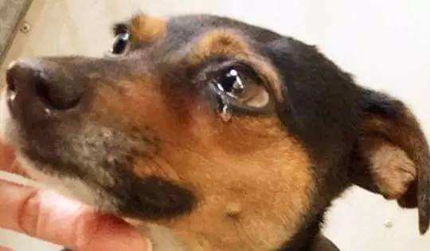
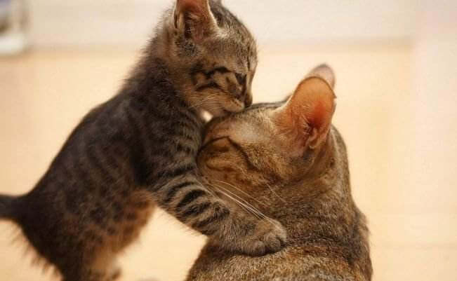

流浪动物生存现状
2012年10月11日本报报道，某公司销售代表关某为喂养70多只流浪猫，挪用22万元公款用于维持流浪猫狗的生活，关某于日前因被控挪用资金罪而受审；
2012年9月29日，中国之声《新闻纵横》报道，我国首部《动物福利通则》即将出台；
2012年8月29日本报报道，田女士称因遭小区流浪狗追赶而摔伤，因此将喂养此流浪狗的王小姐告上法庭，要求赔偿；
2012年8月，本市百旺家苑小区，一夜之间13只流浪猫遭残忍杀害；
2012年4月22日，网友发帖：昆明网友夜拦拉狗货车，志愿者花6万元买下500只狗；
……
近年，一系列由宠物和流浪猫狗引发的社会问题在我们身边突然间多了起来，因对待宠物和流浪猫狗的态度不同引发的社会对立情绪日益凸显，对流浪猫狗的管理也成为考量城市管理水平的重要方面。
遗弃宠物、虐待猫狗的行为该承担什么样的责任？流浪猫狗到底如何管理？动物保护公益组织在流浪猫狗的管理中可以发挥什么样的作用……
这些都是我们乃至整个社会需要去思考的问题。
《宠爱之家》愿意奉献我们微薄的力量，一起来呼吁大家，关爱流浪动物！
为什么我们要做这个事情？
因为归根到底，流浪动物究竟是谁的过错？它们又应该由谁来负责？答案显而易见：动物不会为自己的行为负责。无论是事出意外还是有意为之，人类，特别是宠物饲养者责无旁贷。宠物不会自生自灭，它们从生到死都需要人类的看护之下。
我们反思，流浪动物与野生动物不同，流浪动物原本是人类饲养的宠物，它们在人类长期选育和照料下，已经丧失了野外生存的基本技能。因此，一旦犬猫走失或被饲养者抛弃，它们的命运就十分悲惨，只能过着朝不保夕、居无定所、缺水少食的流浪生活，其寿命也会大为缩短。
而这些可怜的流浪动物已经因为我们，生存现状如此艰辛，我们却还要对他们赶尽杀绝？由于缺少人类必要的照料及看护，流动动物患病死亡、遭受意外以及受到虐待的机会也急剧上升。例如，全球平均每分钟就有20只狗被捕杀，而各地流浪犬遭虐杀的报道也常常见诸报端。
也因此，《宠爱之家》对这个问题进行了反思，我们愿意去做这件注定艰辛的事情，来改变流浪动物生存艰辛的现状，不仅仅是为了流浪动物，也是为了弥补人们曾经对它们犯下的过错。
目前，国际上已有100多个国家和地区出台了保护动物福利或反对动物虐待的法律、法规，中国也急需这样一部法规，能够为包括宠物在内的各种动物提供法律保障。然而，在法律监管暂时缺位的情况下，减少流浪动物更需要民众的支持与参与。例如，支持流浪动物的收容、绝育和领养，科学、负责、有爱地对待和饲养宠物。
只有这样，才能有效地改善流浪动物的生存现状，以及地球的生态环境。
